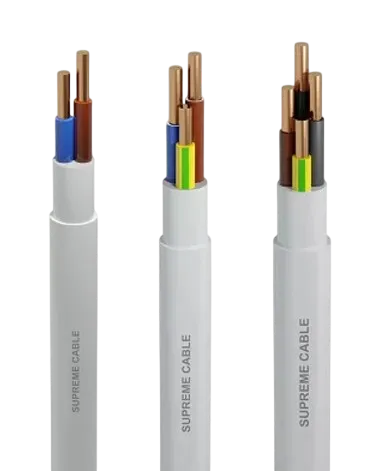

Kabel Listrik SUPREME
Kabel Berkualitas Tinggi dengan Konduktor Tembaga Murni, Standardisasi SNI & Keamanan Terjamin

SUPREME Low Voltage Cable
Distributor Resmi: PT Selaras Dinamika Niaga (SENNA) | Varian: NYM, NYA, NYMHY, NYYHY
Kabel tembaga tegangan rendah (Low Voltage) dari SUPREME dirancang khusus untuk menghantarkan arus listrik dengan stabilitas tinggi. Menyediakan tipe kawat kaku maupun serabut fleksibel untuk instalasi perumahan, gedung, hingga panel industri.
Keunggulan & Sertifikasi Utama:
Spesifikasi Teknis & Varian Produk
Kabel NYM (Cu/PVC/PVC 300/500 V)
Standard: SNI 04.6629.4 | Aplikasi: Untuk instalasi tetap indoor di dalam pipa *conduit* di bawah plesteran atau area terbuka ruangan kering.
| Jenis | Ukuran (Size) | Jumlah Inti | Ukuran Tiap Inti | Bentuk Konduktor | Tebal Insulasi (Ins / Sheath) | Diameter Luar (Max) | Kapasitas Arus (KHA) |
|---|---|---|---|---|---|---|---|
| NYM | 2 x 1.5 mm² | 2 | 1.5 mm² | re (Kawat Tunggal) | 0.7 / 1.2 mm | 10.0 mm | 19 A |
| 2 x 2.5 mm² | 2 | 2.5 mm² | re (Kawat Tunggal) | 0.8 / 1.2 mm | 11.5 mm | 25 A | |
| 2 x 4 mm² | 2 | 4.0 mm² | re (Kawat Tunggal) | 0.8 / 1.2 mm | 12.5 mm | 34 A | |
| 2 x 6 mm² | 2 | 6.0 mm² | re (Kawat Tunggal) | 0.8 / 1.2 mm | 13.5 mm | 44 A | |
| 2 x 10 mm² | 2 | 10.0 mm² | re (Kawat Tunggal) | 1.0 / 1.4 mm | 16.5 mm | 61 A | |
| NYM | 3 x 1.5 mm² | 3 | 1.5 mm² | re (Kawat Tunggal) | 0.7 / 1.2 mm | 10.5 mm | 19 A |
| 3 x 2.5 mm² | 3 | 2.5 mm² | re (Kawat Tunggal) | 0.8 / 1.2 mm | 12.0 mm | 25 A | |
| 3 x 4 mm² | 3 | 4.0 mm² | re (Kawat Tunggal) | 0.8 / 1.2 mm | 13.0 mm | 34 A | |
| 3 x 6 mm² | 3 | 6.0 mm² | re (Kawat Tunggal) | 0.8 / 1.4 mm | 14.5 mm | 44 A | |
| 3 x 10 mm² | 3 | 10.0 mm² | re (Kawat Tunggal) | 1.0 / 1.4 mm | 17.5 mm | 61 A | |
| NYM | 4 x 1.5 mm² | 4 | 1.5 mm² | re (Kawat Tunggal) | 0.7 / 1.2 mm | 11.5 mm | 19 A |
| 4 x 2.5 mm² | 4 | 2.5 mm² | re (Kawat Tunggal) | 0.8 / 1.2 mm | 13.0 mm | 25 A | |
| 4 x 4 mm² | 4 | 4.0 mm² | re (Kawat Tunggal) | 0.8 / 1.4 mm | 14.5 mm | 34 A | |
| 4 x 6 mm² | 4 | 6.0 mm² | re (Kawat Tunggal) | 0.8 / 1.4 mm | 16.0 mm | 44 A | |
| 4 x 10 mm² | 4 | 10.0 mm² | re (Kawat Tunggal) | 1.0 / 1.4 mm | 19.0 mm | 61 A |
Kabel NYA (Cu/PVC 450/750 V)
Standard: SNI 04.6629.3 | Aplikasi: Kabel inti tunggal untuk kabel *grounding* atau perkabelan internal dalam ruangan kering (wajib menggunakan pipa pelindung).
| Jenis | Ukuran (Size) | Jumlah Inti | Ukuran Tiap Inti | Bentuk Konduktor | Tebal Insulasi | Diameter Luar (Max) | KHA (Dalam Pipa) | KHA (Di Udara) |
|---|---|---|---|---|---|---|---|---|
| NYA | 1.5 mm² | 1 | 1.5 mm² | re (Kawat Tunggal) | 0.7 mm | 3.2 mm | 15 A | 24 A |
| NYA | 2.5 mm² | 1 | 2.5 mm² | re (Kawat Tunggal) | 0.8 mm | 3.9 mm | 20 A | 32 A |
| NYA | 4 mm² | 1 | 4.0 mm² | re (Kawat Tunggal) | 0.8 mm | 4.4 mm | 25 A | 43 A |
| NYA | 6 mm² | 1 | 6.0 mm² | re (Kawat Tunggal) | 0.8 mm | 5.0 mm | 33 A | 54 A |
| NYA | 10 mm² | 1 | 10.0 mm² | re (Kawat Tunggal) | 1.0 mm | 6.4 mm | 45 A | 74 A |
Kabel NYMHY (Flexible Copper Conductor - 300/500 Volt)
Standard: SNI 04.6629.5 / SPLN 42-6-2 / IEC 60227-5
Informasi Penting & Aplikasi Penggunaan:
- Sangat cocok untuk kabel power internal (power cord) peralatan elektronik, mesin ringan, luminer, maupun peralatan portabel lainnya di dalam ruangan kering.
- Dapat digunakan untuk instalasi terbuka permanen di lingkungan lembap, dipasang pada tray, atau di bawah plesteran (multipurpose applications).
- Memiliki sifat **Inherently Flame Retardant** (memenuhi standar IEC 60332-1), sehingga tidak merambatkan api demi keamanan tingkat tinggi jika terjadi korsleting.
| Jenis | Ukuran (Size) | Jumlah Inti | Ukuran Tiap Inti | Tebal Insulasi (Ins / Sheath) | Diameter Luar (Nominal) | Kapasitas Arus (KHA) |
|---|---|---|---|---|---|---|
| NYMHY | 2 x 0.75 mm² | 2 | 0.75 mm² | 0.6 / 0.8 mm | 6.3 mm | 9 A |
| 2 x 1 mm² | 2 | 1.0 mm² | 0.6 / 0.8 mm | 6.5 mm | 12 A | |
| 2 x 1.5 mm² | 2 | 1.5 mm² | 0.7 / 0.8 mm | 7.5 mm | 19 A | |
| 2 x 2.5 mm² | 2 | 2.5 mm² | 0.8 / 1.0 mm | 9.2 mm | 25 A | |
| NYMHY | 3 x 0.75 mm² | 3 | 0.75 mm² | 0.6 / 0.8 mm | 6.6 mm | 4 A |
| 3 x 1 mm² | 3 | 1.0 mm² | 0.6 / 0.8 mm | 6.9 mm | 10 A | |
| 3 x 1.5 mm² | 3 | 1.5 mm² | 0.7 / 0.9 mm | 8.1 mm | 17 A | |
| 3 x 2.5 mm² | 3 | 2.5 mm² | 0.8 / 1.1 mm | 10.0 mm | 22 A | |
| NYMHY | 4 x 0.75 mm² | 4 | 0.75 mm² | 0.6 / 0.8 mm | 7.3 mm | 4 A |
| 4 x 1 mm² | 4 | 1.0 mm² | 0.6 / 0.9 mm | 7.8 mm | 10 A | |
| 4 x 1.5 mm² | 4 | 1.5 mm² | 0.7 / 1.0 mm | 9.1 mm | 17 A | |
| 4 x 2.5 mm² | 4 | 2.5 mm² | 0.8 / 1.1 mm | 10.9 mm | 22 A |
Kabel NYYHY (Flexible Copper Conductor - 450/750 Volt)
Standard: SNI 04.6629.5 / Manufacturing Specification
Informasi Penting & Aplikasi Penggunaan:
- Memiliki rating tegangan kerja yang lebih tinggi (**450/750 V**) dibandingkan NYMHY, memberikan ketahanan isolasi ekstra.
- Dirancang dengan selubung luar PVC hitam fleksibel yang tangguh untuk kabel power eksternal maupun internal dengan beban mekanis menengah.
- Sangat cocok untuk lingkungan kering maupun **outdoor / ruangan lembap**, dipasang pada tray, atau di bawah plesteran (multipurpose applications).
- Dilengkapi fitur **Inherently Flame Retardant** (IEC 60332-1) yang tidak merambatkan api jika terjadi korsleting.
| Jenis | Ukuran (Size) | Jumlah Inti | Ukuran Tiap Inti | Tebal Insulasi (Ins / Sheath) | Diameter Luar (Nominal) | Kapasitas Arus (KHA) |
|---|---|---|---|---|---|---|
| NYYHY | 2 x 0.75 mm² | 2 | 0.75 mm² | 0.6 / 0.8 mm | 6.3 mm | 6 A |
| 2 x 1 mm² | 2 | 1.0 mm² | 0.6 / 0.8 mm | 6.5 mm | 10 A | |
| 2 x 1.5 mm² | 2 | 1.5 mm² | 0.7 / 0.8 mm | 7.5 mm | 15 A | |
| 2 x 2.5 mm² | 2 | 2.5 mm² | 0.8 / 1.0 mm | 9.2 mm | 20 A | |
| 2 x 4 mm² | 2 | 4.0 mm² | 0.8 / 1.0 mm | 10.2 mm | 26 A | |
| 2 x 6 mm² | 2 | 6.0 mm² | 0.8 / 1.1 mm | 11.5 mm | 33 A | |
| 2 x 10 mm² | 2 | 10.0 mm² | 1.0 / 1.3 mm | 14.8 mm | 45 A | |
| NYYHY | 3 x 0.75 mm² | 3 | 0.75 mm² | 0.6 / 0.8 mm | 6.6 mm | 6 A |
| 3 x 1 mm² | 3 | 1.0 mm² | 0.6 / 0.8 mm | 6.9 mm | 10 A | |
| 3 x 1.5 mm² | 3 | 1.5 mm² | 0.7 / 0.9 mm | 8.1 mm | 15 A | |
| 3 x 2.5 mm² | 3 | 2.5 mm² | 0.8 / 1.1 mm | 10.0 mm | 20 A | |
| 3 x 4 mm² | 3 | 4.0 mm² | 0.8 / 1.1 mm | 11.1 mm | 26 A | |
| 3 x 6 mm² | 3 | 6.0 mm² | 0.8 / 1.2 mm | 12.4 mm | 33 A | |
| 3 x 10 mm² | 3 | 10.0 mm² | 1.0 / 1.4 mm | 16.0 mm | 45 A | |
| NYYHY | 4 x 0.75 mm² | 4 | 0.75 mm² | 0.6 / 0.8 mm | 7.3 mm | 6 A |
| 4 x 1 mm² | 4 | 1.0 mm² | 0.6 / 0.9 mm | 7.8 mm | 10 A | |
| 4 x 1.5 mm² | 4 | 1.5 mm² | 0.7 / 1.0 mm | 9.1 mm | 15 A | |
| 4 x 2.5 mm² | 4 | 2.5 mm² | 0.8 / 1.1 mm | 10.9 mm | 20 A | |
| 4 x 4 mm² | 4 | 4.0 mm² | 0.8 / 1.2 mm | 12.3 mm | 26 A | |
| 4 x 6 mm² | 4 | 6.0 mm² | 0.8 / 1.3 mm | 13.8 mm | 33 A | |
| 4 x 10 mm² | 4 | 10.0 mm² | 1.0 / 1.5 mm | 17.7 mm | 45 A |